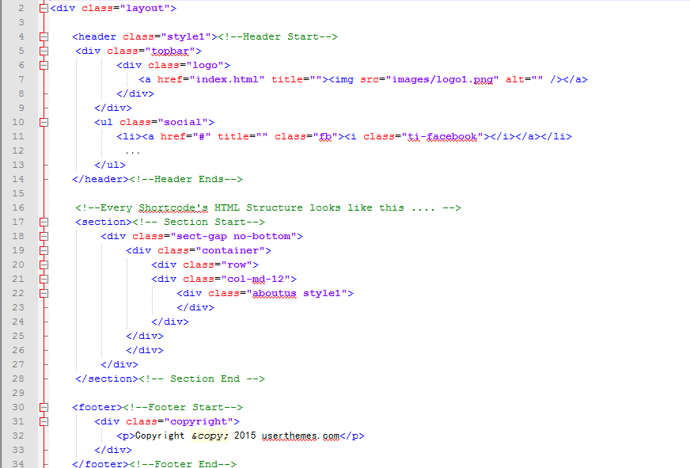

Created: 12/05/2015
By: userthemes
Email: userthemes@gmail.com
Thank you for purchasing my theme. If you have any questions that are beyond the scope of this help file, please feel free to email via my user page contact form here. Thanks so much!
This HTML Template is a 100% responsive layout. All of the information within the main content area is nested within a div with an class of "layout". The general template structure is the same throughout the template. Here is the general structure.
If you would like to edit the color, font, or style of any elements in one of these columns, you would do the following:
#primaryContent a {
color: #someColor;
}
So, to ensure that your new styles are applied, make sure that they carry enough "weight" and that there isn't a style lower in the CSS file that is being applied after yours.
I'm using the following CSS files in this HTML Template. The first one is a generic reset file. Many browser interpret the default behavior of html elements differently. By using a general reset CSS file, we can work round this. This file also contains some general styling, such as anchor tag colors, font-sizes, etc. Keep in mind, that these values might be overridden somewhere else in the file.
The second file contains all of the specific stylings for the page. The file is separated into sections using:
/* === Header Section === */
/*****
1 - General code ||| Line No : 11
2 - Common Code ||| Line No : 54
3 - Index, Index 1, Index 2 ||| Line No : 208
4 - Index 3 ||| Line No : 400
5 - Index 4 ||| Line No : 600
6 - Index 5 ||| Line No : 1020
7 - Inner Header ||| Line No : 1251
8 - Blog ||| Line No : 1324
9 - Contact Form ||| Line No : 1424
10 - portfolio ||| Line No : 1500
11 - Isotopes ||| Line No : 1553
12 - About us ||| Line No : 1580
13 - Responsive Menu ||| Line No : 1610
14 - Profile ||| Line No : 1634
15 - Bottom Information Shortcode ||| Line No : 1974
16 - copyright ||| Line No : 2007
17 - Demo Panel ||| Line No : 2025
******/
The Following CSS Files are included in this HTML Template
1 - bootstrap.min.css
2 - font-awesome.min.css
3 - jquery.mCustomScrollbar.css
4 - owl.carousel.css
5 - prettyPhoto.css
6 - responsive.css
7 - style.css
8 - themify-icons.css
If you would like to edit a specific section of the site, simply find the appropriate label in the CSS file, and then scroll down until you find the appropriate style that needs to be edited.
This HTML Template imports Seven Javascript files.
$('#circle-one').circliful();
$('#circle-two').circliful();
$('#circle-three').circliful();
$('#circle-four').circliful();
$(window).load(function(){
var $container = $('.portfolio-wrapper');
$container.isotope({
filter: '*',
animationOptions: {
duration: 750,
easing: 'linear',
queue: false
}
});
(function($){
$(window).load(function(){
$(".styles-list").mCustomScrollbar();
});
})(jQuery);
$('.portfolioFilter ul li a').click(function(){
$('.portfolioFilter .current').removeClass('current');
$(this).addClass('current');
var selector = $(this).attr('data-filter');
$container.isotope({
filter: selector,
animationOptions: {
duration: 750,
easing: 'linear',
queue: false
}
});
return false;
});
})
$(".work-carousel").owlCarousel({
margin:30,
singleItem:true,
items: 1,
nav: false,
autoplay:true,
autoplayTimeout:3000,
smartSpeed:2000,
loop:true,
dots:false,
responsive:{
0 :{ items:1 },
480 :{ items:1 },
768 :{ items:1 },
1200:{ items:1 },
}
});
Once again, thank you so much for purchasing this theme. As I said at the beginning, I'd be glad to help you if you have any questions relating to this theme. No guarantees, but I'll do my best to assist. If you have a more general question relating to the themes on ThemeForest, you might consider visiting the forums and asking your question in the "Item Discussion" section.
userthemes